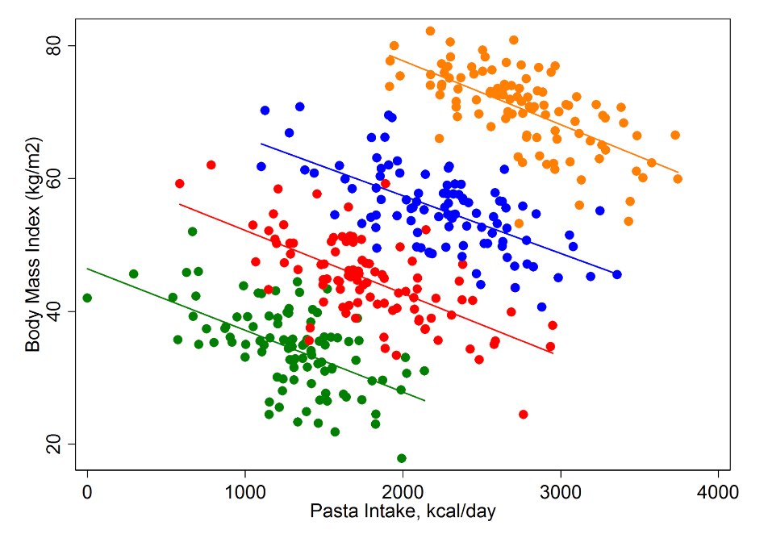
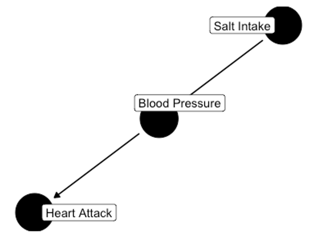
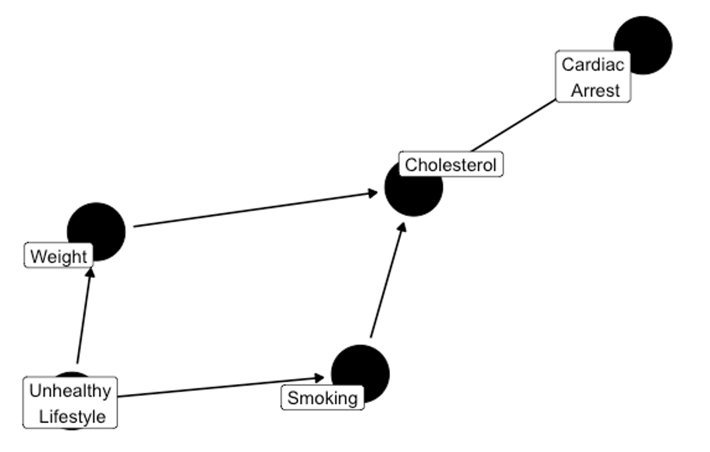

Causal Inference and Statistical Consulting
Cornell Statistical Consulting Unit
https://cscu.cornell.edu
mthomas@cornell.edu
3/27/23
Goals
- Talk a little bit about causal inference
- Talk a little bit about statistical consulting
Let’s Start With Pasta
https://www.methodsman.com/blog/pasta-bmi-and-simpsons-paradox
https://www.methodsman.com/blog/pasta-bmi-and-simpsons-paradox
Weight categories: Simpson’s paradox
https://www.methodsman.com/blog/pasta-bmi-and-simpsons-paradox
Taking a step back
What does it really mean for A to cause B?
Some possible interpretations
- When A happens, B happens
- When A happens, B is more/less likely to happen
Sprious correlations
https://tylervigen.com/view_correlation?id=1703
Some possible interpretations
- When A happens, B happens
- When A happens, B is more/less likely to happen
- B relies on A (at least in part) to determine its value

https://www.york.ac.uk/depts/maths/histstat/smoking.htm https://priceonomics.com/why-the-father-of-modern-statistics-didnt-believe/
A “Toy” Example
- Suppose you’re interested in the effects of taking vitamins on blood pressure
- You collect some (observational) data, and find that people who take vitamins every day have, on average, lower blood pressure
- What’s the story here?
Observational studies vs experimental studies

https://xkcd.com/552/
Experiments
- Why not just run an experiment?
- Ethics
- Practicality
- Cost
- Sometimes not even possible – e.g. fairness studies, weather studies like forest fires
Hill Criteria1
- Strength (effect size): A small association does not mean that there is not a causal effect, though the larger the association, the more likely that it is causal.
- Consistency (reproducibility): Consistent findings observed by different persons in different places with different samples strengthens the likelihood of an effect.
- Specificity: Causation is likely if there is a very specific population at a specific site and disease with no other likely explanation. The more specific an association between a factor and an effect is, the bigger the probability of a causal relationship.
- Temporality: The effect has to occur after the cause (and if there is an expected delay between the cause and expected effect, then the effect must occur after that delay).
- Biological gradient (dose-response relationship): Greater exposure should generally lead to greater incidence of the effect. However, in some cases, the mere presence of the factor can trigger the effect. In other cases, an inverse proportion is observed: greater exposure leads to lower incidence.
- Plausibility: A plausible mechanism between cause and effect is helpful (but Hill noted that knowledge of the mechanism is limited by current knowledge).
- Coherence: Coherence between epidemiological and laboratory findings increases the likelihood of an effect. However, Hill noted that “… lack of such [laboratory] evidence cannot nullify the epidemiological effect on associations”.
- Experiment: “Occasionally it is possible to appeal to experimental evidence”.
- Analogy: The use of analogies or similarities between the observed association and any other associations.
Interventions vs Conditioning
- Intervening means you are (at least hypothetically) intervening, or setting a variable to a value
- Conditioning means we are restricting what we’re looking at to a specific group/outcome
Claims and Reality
- In reality, we might want to be able to do an intervention / experiment, but we can’t
- We often make watered-down causal claims because of this1
Let’s look at actual code examples
Data are houses in Saratoga Springs
Predicting price
| Characteristic | Beta | 95% CI1 | p-value |
|---|---|---|---|
| bedrooms | 48,218 | 43,007, 53,428 | <0.001 |
| 1 CI = Confidence Interval | |||
If you remember one thing:
Controlling for everything without thinking about it is dangerous
(in the previous examples, adding extra predictors improved the model, we’ll see examples in a bit where the opposite is true)
Causal Inference as a collection of tools
- Directed acyclic graphs (DAGs)
- Do-calculus
- Propensity scores
- Matching
DAGs
Directed
Acyclic
Graphs
Consider a study
Suppose we want to study the relationship between smoking and FEV
What variables might we want to include?
Actual study variables

How could we set up a DAG for these? (Take a second to draw one for yourself)
(Cummiskey et al., 2020)
(Cummiskey et al., 2020)
Types of Relations in DAGs
- Chains
- Forks
- Colliders
Chains
Chains
Forks
Colliders
Why Care About This?
- Say we have a chain:
- C depends on B, which depends on A
- This means C (probably) depends on A
- What if we condition on B?
Chain Example

- Condition on Blood Pressure, so we look at people with only a specific blood pressure
- Heart Attack and Salt Intake are conditionally independent given Blood Pressure
Let’s simulate this
(Lübke et. al, 2020)
| Characteristic | Beta | 95% CI1 | p-value |
|---|---|---|---|
| learning | 15 | 15, 15 | <0.001 |
| 1 CI = Confidence Interval | |||
Fork Example
- Ice cream sales and crime rate are correlated
- What if we condition on temperature?
Fork simulation
(This is Simpson’s paradox)
(Lübke et. al, 2020)
| Characteristic | Beta | 95% CI1 | p-value |
|---|---|---|---|
| learning.time | -0.40 | -0.40, -0.39 | <0.001 |
| 1 CI = Confidence Interval | |||
Collider Example
Using this diagram, are weight and smoking independent conditioned on (or given) Cholesterol?
Another Collider Example
- Getting the flu and chicken pox are independent
- Both lead to a fever
- Are they independent if we condition on having a fever?
Simulated collider
(Berkson’s paradox)
(Lübke et. al, 2020)
| Characteristic | Beta | 95% CI1 | p-value |
|---|---|---|---|
| network | 0.00 | -0.06, 0.07 | 0.9 |
| 1 CI = Confidence Interval | |||
- These independences lead to testable theories, in that we can test the graph
- We could also create a set of all graphs which are compatible with the data
Backdoor Criteria
To figure out what we should condition on: From X to Y: Find a set so that it contains no descendants of X, and blocks every path between X and Y that contains an arrow into X
Examples - Effect of X on Y?
https://medium.data4sci.com/causal-inference-part-xi-backdoor-criterion-e29627a1da0e
What if we want to condition on W?
https://medium.data4sci.com/causal-inference-part-xi-backdoor-criterion-e29627a1da0e
https://medium.data4sci.com/causal-inference-part-xi-backdoor-criterion-e29627a1da0e
https://medium.data4sci.com/causal-inference-part-xi-backdoor-criterion-e29627a1da0e
(Cummiskey et al., 2020)
Smoking -> Cardiac Arrest
https://cran.r-project.org/web/packages/ggdag/vignettes/intro-to-dags.html
Moral of the Story
Conditioning on everything can lead to unbiased estimates, or worse, even the wrong conclusions (like Simpson’s paradox)
(Rohrer, 2018)
Pearl and Mackenzie, The Book of Why
What does a statistical consultant do?
- Meet with clients to work with them on their analysis
- Help clients design experiments
- Work with clients on their explanations of statistical methods
- Give workshops on particular statistical topics
What topics come up?
- Graphing
- Mixed models
- Generalized linear models
- Path analysis / SEM / mediation / moderation
- Bayesian methods
- Software issues